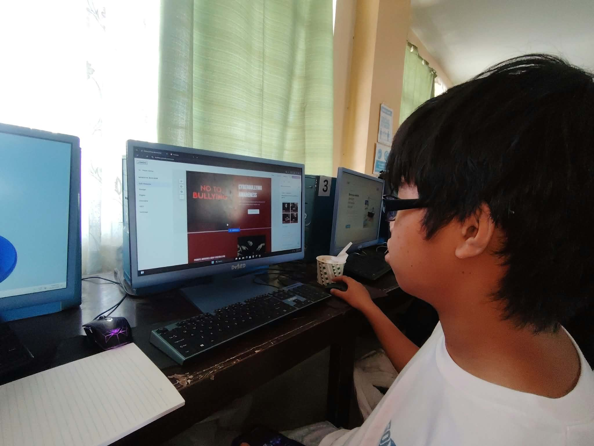

Disrupted lessons
Teachers often pause to recap for returning learners, which slows the lesson for everyone.
Think of a stone dropped in water. An absence starts with one learner, but the ripples reach classmates, teachers, families and the school itself.
Understanding those ripples helps us see why attendance is something we do for each other, not just for ourselves.

Teachers often pause to recap for returning learners, which slows the lesson for everyone.
Teachers prepare make-up work, track down missing activities and follow up with families, on top of regular teaching.
Group work, projects and team activities are harder when members are missing. Classmates can feel let down or left to carry the load.
A school known for strong attendance and a caring culture is a school people are proud of.
Lessons, materials and teacher time are prepared for every learner. When seats stay empty, some of that effort is lost.
Learners who miss out may find fewer opportunities later. Over time that can affect families and the whole community.
When everyone shows up, ideas bounce around, groups work better and learners feel they belong.
That is what this campaign is working toward: classrooms where people want to be and where every seat has a learner in it.
You do not need to fix everything. Small steps, such as showing up, checking on a friend or asking for help early, make our school stronger.